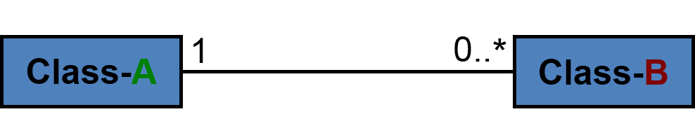
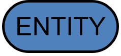
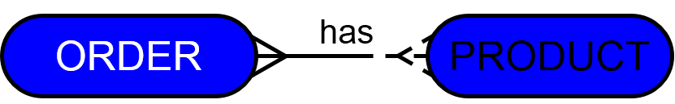
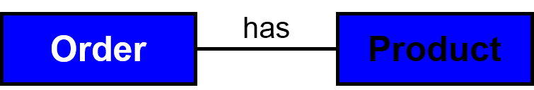

Data Entities
What is the concept of analysis and design?
- A description of what the product will be and how it will be made
- An Information System is a collection of programs AND a Data Storage Structure
- So an essential part of the analysis and design is identifying What data needs to be captured and how it will be stored
What are data entities ?
- Entity Type: A type of thing that is capable of independent existence and on which an organisation may wish to hold data.
- Entities and Data
-
select relevant entities
- Identify entities from the Use Cases and other analysis documents.
-
select relevant entities
- Select relevant data about each entity (data about entities are often called attributes)
What is the scope of the system ?
- People (individuals, roles or organisations)
- beneficial users
- immediate users
- related workers
- Things (real or abstract)
- produced by the activity
- used in the activity
- Only include relevant data about things
What are relationships ?
- Relationship:how two or more entity types are linked to one another
- Knowing about the link is extra data that does not belong to just one of the Entities
- Given one entity the others may be traced
- Creating or breaking the link may be part of the transaction process
- If the link adds extra data that does not belong to just one of the Entities the link itself may also be a Data Entity (like the Order Line Entity)
What is cardinality ?
- Cardinality: how many instances of an entity relate to one instance of another entity.
- 
- 2,4 means "two or four"
- 2...4 "from 2 to 4
- * means any number
What is an entity relationship diagram ?
- 
- 
- Above are the examples of Entity relationship diagrams
What are UML: Class Diagrams?
- 
What are keys?
- keys:enable the links or relationships to be added to the data in the .CSV file
- A Key is one or more columns where:
- the data is distinct for each row.
- given the key values you can find the row
- If the are several possible keys one is selected and called the primary key
how are keys related to relationships ?
- Relationships (or links) are represented by storing the primary key values in the other file (or Spreadsheet)
- These linking columns in the other files are called a foreign key
- For 1-to-many relationships the primary key from the “1 end” is added as foreign key in the “many end”
- For 1-to-1 both ends may have the same primary key